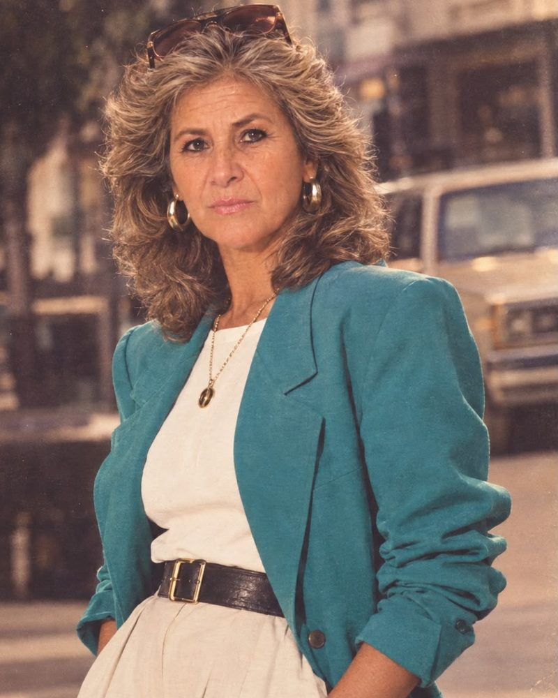

Efigenia
Cala Gómez
Ingeniera Agrónoma
Consultora Senior
Conocimiento de campo para hacer crecer flores, cultivos y equipos.
trayectoria
de flor
y berries
Sobre mí
Soy ingeniera agrónoma y llevo 38 años en los sectores floricultor y hortícola. Participé en el desarrollo de Alstroemeria Perfection y Alstroemeria Gold.
Acompaño a las empresas en toda la cadena, uniendo la visión técnica con la productiva y comercial:
- Material vegetal
- Producción
- Cosecha
- Postcosecha
- Empaque
- Logística
- Cliente
Cómo puedo ayudar
Diagnóstico técnico
Causas y acciones correctivas en campo.
Nuevos productos
De la idea a la viabilidad comercial.
Postcosecha y empaque
Calidad, vida útil y presentación.
Formación de equipos
Ingenieros, supervisores y operarios.
Experiencia por cultivo
Flores de corteAlstroemeria, clavel, Gypsophila…
Alstroemeria (Perfection, Gold), clavel, Gypsophila, crisantemo y pompón, Lisianthus, Hydrangeas, gerberas, ranúnculos, Delphinium, girasol, lirios y mini callas.
Diversificados y follajesLimonium, Snapdragon, Aster…
Limonium, Snapdragon, Aster, Solidago, Astilbe, Hypericum, Trachelium, Craspedia, escabiosa, Nigella, Matricaria y brásicas ornamentales, entre otras.
Hortalizas de especialidadGuisante, cogollo de Tudela, rúcula…
Guisante, cogollo de Tudela, rúcula, coliflor, chinacol, ruibarbo, zanahoria, acelga y espinaca.
Frutas y berriesFresa, frambuesa, mora, arándano
Fresa, frambuesa, mora y arándano, además de otros productos de especialidad.
Hablemos
Cuéntame qué necesita tu cultivo o tu empresa.
Guardar en mis contactosDel conocimiento a la acción, del cultivo al producto.Efigenia Cala Gómez · Consultoría independiente